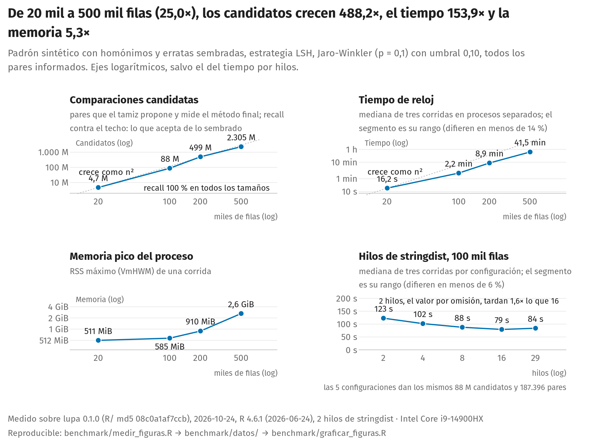
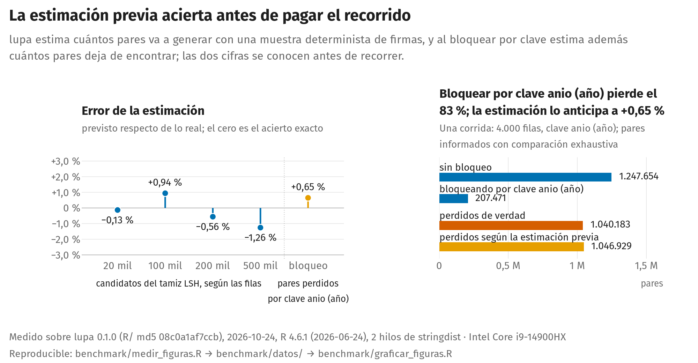
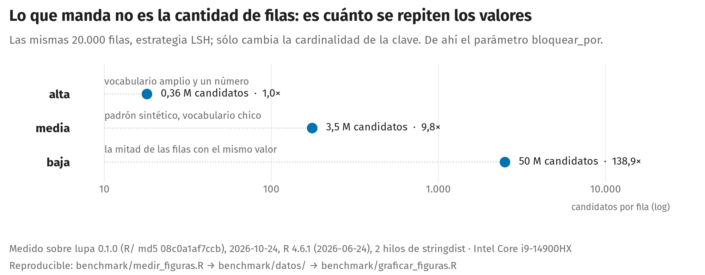
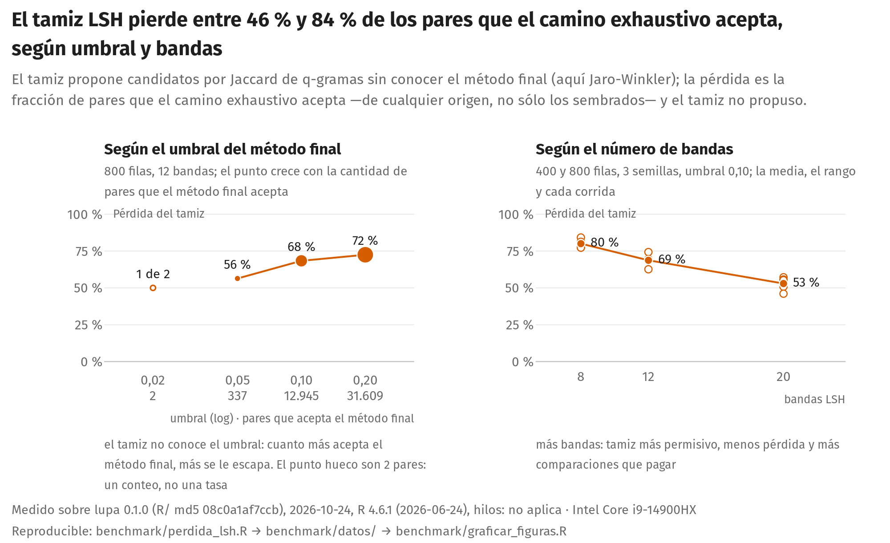

Evidencia y rendimiento
Source:vignettes/articles/evidencia-y-rendimiento.Rmd
evidencia-y-rendimiento.RmdCada comprobación de lupa usa una unidad y una
referencia declaradas, y son distintas entre sí. Ninguna estima una
exactitud única para todo el paquete. Este artículo reúne las cifras de
evidencia y de rendimiento que publica la documentación. Cada una lleva
su unidad, su clase y la forma de rehacerla.
Las 4 clases de cifra
| Clase | Qué significa | Qué se publica junto a la cifra |
|---|---|---|
| Fija, sin red | sale de un fixture versionado o del código; una prueba la fija o esta página la calcula al construirse | la prueba o el guion que la produce |
| Requiere un motor | necesita un servidor de base de datos y su controlador | motor y versión, controlador, fixture, fecha y revisión |
| Recurso descargado | el insumo se baja de la red y puede cambiar | la fuente, la fecha de la corrida y la huella del archivo |
| Corrida única | se midió una vez sobre datos que el repositorio no tiene | la fecha y el alcance; no se rehace desde el repositorio |
Las cifras que requieren un motor están en Motores y escala:
- la matriz de motores;
- los costos de consulta;
- la memoria de
perfilar_dbi().
🔎 La tabla de evidencia
| Comprobación | Unidad | Resultado | Clase | Se reproduce con |
|---|---|---|---|---|
| Controles limpios construidos | 31 tablas | 0 hallazgos de severidad error; 8 señales para
revisar |
fija, sin red; calculada en esta página | test-regresion-107.R |
| Pares dirty/clean de Raha | columnas con al menos una celda cambiada | 26 de 26 recibieron al menos un hallazgo; se señalaron 8 columnas más | recurso descargado; corrida del 2026-10-24 |
verdad_raha.R
y medir_lupa.R
|
| Registro público de sanciones a empresas | hallazgos de severidad error
|
9 de 9 coinciden con la misma cuenta hecha en R base, sobre una copia de 2.583 filas | recurso descargado; corrida del 2026-10-24, con la huella del archivo | medir_sanciones.R |
| Ausencia estructural | señales posible_ausencia_estructural
|
ninguna en 20 conjuntos de datasets y 60 tablas al
azar; dispara en los 3 casos positivos; calla con 10 % de ruido |
fija, sin red; corrida del 2026-10-24 | banco_ausencia_estructural.R |
| Reparación de codificación | casos del corpus de ftfy 6.3.1 | 159 de 161 reproducidos | fija, sin red; calculada en esta página | test-reparacion-texto.R |
| Contraste contra el servidor | comparaciones exactas | 15.039 de 15.039 coinciden con un conteo SQL escrito aparte, en 2.371 tablas de 8 bases de producción | corrida única, del 26 al 30 de octubre de 2026, sobre datos que el repositorio no tiene | no se rehace desde el repositorio; ver Contraste contra el servidor |
Controles limpios construidos
Las 31 tablas limpias se construyen a propósito con las formas que más confunden a un perfilador. Entre otras:
- decimales con coma, fechas, booleanos y porcentajes guardados como texto;
- identificadores correlativos;
- códigos postales, teléfonos, correos y documentos;
- nombres de persona;
- una distribución lognormal.
No deberían producir ningún error. La cifra la fija
tests/testthat/test-regresion-107.R, y esta página la
vuelve a calcular con el mismo generador al construirse.
length(tablas_limpias)
#> [1] 31
table(severidad = hallazgos_limpios$severidad)
#> severidad
#> ok sospechoso error
#> 89 8 0
print(senales[, c("tabla", "columna", "tipo_hallazgo")], row.names = FALSE)
#> tabla columna tipo_hallazgo
#> decimales_con_coma importe tipo_declarado_distinto
#> decimales_con_coma importe numero_como_texto
#> fechas_como_texto fecha_texto tipo_declarado_distinto
#> moneda_unica precio numero_como_texto
#> unidad_unica peso numero_como_texto
#> booleanos_texto vigente tipo_declarado_distinto
#> porcentajes_texto porcentaje numero_como_texto
#> lognormal duracion outliersLas señales son de severidad sospechoso: números y
fechas guardados como texto, y los atípicos de la distribución
lognormal. Piden una revisión y no afirman un defecto.
Pares dirty/clean de Raha
Raha publica tablas en 2 versiones, sucia y limpia. La comparación celda a celda dice qué columnas tienen al menos una celda cambiada.
La cifra «26 de 26» es cobertura por columna, no evidencia de que se haya identificado cada celda cambiada. Por eso no se informa precisión ni exhaustividad a partir de Raha.
La comparación etiqueta celdas cambiadas, no toda propiedad observable de una columna sin cambios. Las 8 columnas adicionales tienen observaciones verdaderas:
- constantes;
- columnas duplicadas;
- mayúsculas inconsistentes;
- cadenas vacías;
- texto de cardinalidad alta.
Los 2 guiones, además:
-
verdad_raha.Rbaja los 6 archivos; -
medir_lupa.Rimprime la versión y el selloBuiltde la instalación delupaque mide; -
medir_lupa.Rse detiene si a esa instalación le falta una capacidad que la medición necesita.
Desde la raíz del repositorio:
R CMD build . && R CMD INSTALL lupa_*.tar.gz
Rscript benchmark/verdad_raha.R
Rscript benchmark/medir_lupa.RSalida de benchmark/medir_lupa.R del 2026-10-24, sobre
la revisión 0.1.0; R/ md5 08c0a1af7ccb (extracto):
Cobertura por columna
hospital 17 de 17 afectadas con hallazgo; 19 senaladas; 2 adicionales
flights 4 de 4 afectadas con hallazgo; 6 senaladas; 2 adicionales
beers 5 de 5 afectadas con hallazgo; 9 senaladas; 4 adicionales
total 26 de 26 afectadas con hallazgo; 34 senaladas; 8 adicionalesVersion de los archivos obtenidos (bytes, Adler-32 y SHA-256): hospital dirty.csv 303306 bytes f970da05 dbc5575b915fe8b5e0ac6dc6172f38ba91e611fdb76d09a8f4a81cb7ea9925ac hospital clean.csv 303324 bytes 74435416 ea3ee44998455c0b491750c348509de176c758a3bbf58e4530c0a136bb248b4b flights dirty.csv 154776 bytes d3a57255 1b5c1afa10aa0e7c20fd7e14d05c56772715b2771aa0f5fa67ed1709e1eecd46 flights clean.csv 173159 bytes ffe72679 0acfcfd8985b06fdd363965c9e8d9522c43e7589a93d79ae7dc311e1c37fdf3b beers dirty.csv 255295 bytes b2bb7910 7110bf4931a9445a1675e544d6c996817c739136239f8a2b02e088c7ec0a1f68 beers clean.csv 233019 bytes 71980a46 373227df59ad197e154dd5149125789e415019535c7223355e9486ee1b3b93de
| Dataset | Archivo | Bytes | Adler-32 | SHA-256 |
|---|---|---|---|---|
| hospital | dirty.csv | 303306 | f970da05 | dbc5575b915fe8b5e0ac6dc6172f38ba91e611fdb76d09a8f4a81cb7ea9925ac |
| hospital | clean.csv | 303324 | 74435416 | ea3ee44998455c0b491750c348509de176c758a3bbf58e4530c0a136bb248b4b |
| flights | dirty.csv | 154776 | d3a57255 | 1b5c1afa10aa0e7c20fd7e14d05c56772715b2771aa0f5fa67ed1709e1eecd46 |
| flights | clean.csv | 173159 | ffe72679 | 0acfcfd8985b06fdd363965c9e8d9522c43e7589a93d79ae7dc311e1c37fdf3b |
| beers | dirty.csv | 255295 | b2bb7910 | 7110bf4931a9445a1675e544d6c996817c739136239f8a2b02e088c7ec0a1f68 |
| beers | clean.csv | 233019 | 71980a46 | 373227df59ad197e154dd5149125789e415019535c7223355e9486ee1b3b93de |
Adler-32 permite detectar rápidamente que cambiaron los bytes.
SHA-256 es la huella criptográfica publicada. Las huellas de la corrida
también están en benchmark/resultados.md,
junto con el detalle de qué cuenta cada número.
Registro público de sanciones a empresas
Se perfila el registro, tomado de un catálogo de datos abiertos. Cada
hallazgo de severidad error se compara con la misma cuenta
hecha aparte, en R base, sobre el mismo archivo.
El registro cambia con las actualizaciones de quien lo publica. Por
eso cada corrida guarda su fecha, sus filas y la suma SHA-256 del
archivo que midió. La fuente exacta está en el guion, que no publica
valores del registro, sólo cuentas. Necesita red, salvo que
LUPA_SANCIONES_CSV nombre una copia local:
Corrida del 2026-10-24, sobre la revisión
0.1.0; R/ md5 08c0a1af7ccb, con un archivo de 2.583 filas
(SHA-256 1bb7689d8ffe6663...). El paquete emitió 9
hallazgos de severidad error:
#> comprobacion lupa r_base coincide
#> Fecha: celdas en blanco 1 1 TRUE
#> Fecha: formatos ISO y dd/mm/aaaa 2579,2 2579,2 TRUE
#> Empresa: filas con un espacio invisible 1 1 TRUE
#> Sancion.aplicada: guiones 2 2 TRUE
#> Importe: celdas en blanco 1 1 TRUE
#> Moneda: guiones y blancos 997 997 TRUE
#> Sector: celdas en blanco 7 7 TRUE
#> Motivo: celdas en blanco 6 6 TRUE
#> filas en grupos duplicados 18 18 TRUEAusencia estructural
posible_ausencia_estructural no debería disparar donde
la ausencia es independiente, y sí donde una columna decide qué filas
tienen otra. El guion perfila:
- los 20 primeros conjuntos de
datasets(por orden alfabético, con al menos 20 filas); - un lote de 60 tablas al azar con ausencia independiente;
- los 3 casos que sí deben disparar: un modelo entidad-atributo-valor, un salto de patrón de encuesta y columnas excluyentes;
- un caso con un 10 % de filas que rompen la regla. Debe callar, porque la relación existe pero no es una regla.
No necesita red:
Salida del 2026-10-24, sobre la revisión
0.1.0; R/ md5 08c0a1af7ccb:
== veinte conjuntos reales (datasets de R) ==
total: 0 senales en 20 conjuntos (esperado: 0)
== sesenta tablas al azar: 0 senales (esperado: 0) ==
== positivos (esperado: disparan) ==
entidad-atributo-valor : dispara
salto de encuesta : dispara
columnas excluyentes : dispara
== 10% de ruido (esperado: calla): calla ==Reparación de codificación
El corpus de ftfy 6.3.1 viaja con las pruebas del paquete. Esta página lo recorre con el mismo motor de reparación:
suite <- vapply(corpus, `[[`, character(1), "suite")
table(suite, reproducido = ftfy_aciertos)
#> reproducido
#> suite FALSE TRUE
#> in-the-wild 1 69
#> known-failures 1 9
#> language-names 0 20
#> negative 0 31
#> synthetic 0 30El detalle, con los casos negativos y lo que la reparación no hace, está en Codificación y locales.
Contraste contra el servidor
Entre el 26 y el 30 de octubre de 2026, un equipo externo corrió
lupa sobre 8 bases de producción, unas 3.300 tablas:
- PostgreSQL: 5 bases, de la versión 9.3 a la 13;
- SQL Server: 3 bases, de las versiones 2008 R2 y 2016.
Los datos no salen de ese entorno y el repositorio no los tiene. Las cifras son de una corrida única, con la versión de esas fechas.
En 2.371 tablas, leídas enteras, se comparó lo que da
medir() con un conteo SQL escrito aparte sobre las mismas
filas. Coinciden las 15.039 comparaciones que miden lo mismo:
| Métrica | Comparaciones | Coinciden |
|---|---|---|
NoNulo, con valores_nulos = ""
|
14.132 | 14.132 |
Formato, con validar_ci_uy() como
validador |
304 | 304 |
ValoresPosiblesPorComprension (fecha no futura,
nacimiento en rango, edad, no negativo) |
552 | 552 |
Orden entre 2 fechas, una métrica propia medida con
medir()
|
51 | 51 |
Hay 2 salvedades:
- En 178 de las columnas de
NoNulohabía celdas de solo blancos. El servidor las contaba como faltantes, yNoNulo, en la versión medida, no. Para comparar lo mismo, se vaciaron antes de medir. En el código que se publica,NoNulocomparavalores_nuloscon la normalización deperfilar(): una celda de solo blancos cuenta como nula sin preparar nada. - Las 2.789 instancias de
NoNuloconopcional = TRUEno se comparan, porque no se cuentan sobre el mismo universo.lupamide sobre las celdas presentes, como dice su ayuda, y el conteo del servidor, sobre todas las filas.
Aparte, validar_ci_uy() revisó las cédulas de 8 columnas
en tablas enteras de 4 de esas bases. Las tablas iban de 1 millón a
decenas de millones de filas: casi 88 millones de valores, leídos en
bloques de 100.000. En las 8 columnas da la misma cantidad de cédulas
válidas que la misma regla escrita en SQL.
La coincidencia es exacta y no depende de la máquina. No se repite en otro entorno sin esos datos. Tampoco dice que no haya defectos de completitud: dice que, donde ambos cuentan lo mismo, cuentan igual. Los tiempos y la memoria de esa corrida están en Motores y escala.
⏱ Rendimiento: 4 figuras que salen de un CSV
Las 4 figuras no se pegan de una consola.
benchmark/medir_figuras.R mide la instalación de
lupa visible en .libPaths():
- imprime su sello
Built; - se detiene si falta, y también si esa instalación es anterior al último commit del código;
- deja los datos crudos en
benchmark/datos/, un CSV por tabla con el commit como última columna.
benchmark/graficar_figuras.R dibuja sólo lo que hay en
esos CSV, con R base. Cada figura lleva al pie el commit, la fecha y la
máquina. Las cifras de este apartado se leen de los mismos CSV al
construir la página.
Las 4 describen la revisión R/ md5 08c0a1af7ccb, medida
el 2026-10-24 en una máquina con Intel(R) Core(TM) i9-14900HX, 30
núcleos y 31 GiB de memoria, con R 4.6.1. Los conteos (candidatos,
pares, exhaustividad, pérdida) son deterministas y se reproducen en
cualquier equipo. Los tiempos y la memoria son de esa máquina y sirven
como orden de magnitud, no como promesa. La comparación es Jaro-Winkler
con umbral 0,10 y 2 hilos.

El padrón sintético tiene homónimos y erratas sembradas sobre un vocabulario chico. Es la forma que más llena las cubetas del LSH, o sea el caso caro. Los candidatos crecen con el cuadrado de las filas (4.722.224 a 20.000 filas, 2.305.197.149 a 500.000). El tiempo y la memoria los siguen: 16,2 s y 511 MiB a 20.000 filas, 41 min y 2,6 GiB a 500.000. De los pares sembrados que la medida final acepta no se pierde ninguno en ningún tamaño (exhaustividad contra el techo: 100 %).
Hilos: qué cambia y qué se mide
El cuarto panel mide lo que cuestan los hilos a 100.000 filas: 123, 102, 88, 79, 84 segundos con 2, 4, 8, 16, 29 hilos (1,6 veces entre 2 y 16). Los candidatos y los pares no cambian con los hilos, sólo el reloj.
El valor por omisión es de 2 hilos, el máximo que la política de CRAN
admite al comprobar un paquete. Se cambia con
options(lupa.nucleos = ). La ganancia depende de qué
fracción del trabajo cae en la comparación, y sobre otro padrón la curva
puede ser más plana. La comparación de stringdist usa
nucleos = getOption("lupa.nucleos", 2L) hilos. Se puede
cambiar por llamada, y el valor efectivo queda en
alcance$nucleos_usados.
proveedores_hilos <- data.frame(
id = 1:8,
proveedor = c(
"Ferretería Central", "Ferreteria Central", "Distribuidora Sur",
"Distribuidora Sur", "Lácteos del Este", "Lacteos del Este",
"Imprenta Norte", "Imprenta Nortes"
),
rubro = c(
"ferretería", "ferretería", "alimentos", "alimentos", "alimentos",
"alimentos", "gráfica", "gráfica"
),
stringsAsFactors = FALSE
)
pares_hilos <- detectar_duplicados_aproximados(
proveedores_hilos, columnas = c("proveedor", "rubro")
)
un_hilo <- detectar_duplicados_aproximados(
proveedores_hilos, columnas = c("proveedor", "rubro"), nucleos = 1
)
un_hilo$alcance$nucleos_usados
#> [1] 1
identical(un_hilo$pares, pares_hilos$pares)
#> [1] TRUE
estimar_costo() dice cuántos pares candidatos va a
generar el recorrido antes de pagarlo, con una muestra determinista de
firmas. En los 4 tamaños medidos, el error va de -1,26 % a +0,94 %. El
paquete no promete una tolerancia: la medición es la que hay.
Bloquear por una clave de negocio sin relación con el nombre
(anio) descarta el 83 % de los pares que informa la
comparación exhaustiva. Son 1.040.183 de 1.247.654, sobre 4.000 filas.
La estimación previa lo anticipa con un error de +0,65 %. La clave no
sirve para este dato, y se ve antes de usarla.

Lo que manda no es la cantidad de filas: es cuánto se repiten los
valores. Las mismas 20.000 filas dan 360.306 candidatos con un
vocabulario amplio. Cuando la mitad comparte un valor, dan 50.059.641,
138,9 veces más. Es el número que estimar_costo() anticipa
y el motivo de que el paquete estime antes de recorrer.

El camino LSH es un tamiz, no un sustituto del exhaustivo. Esta
figura dimensiona la advertencia que declara alcance. Se
mide contra la comparación exhaustiva sobre la misma entrada, con las
otras causas de pérdida neutralizadas:
- con 12 bandas, el valor por omisión, el tamiz deja afuera entre el 63 % y el 74 % de los pares que acepta Jaro-Winkler. El umbral es 0,10, y el corpus, de 400 y 800 filas;
- con 20 bandas, la pérdida baja a entre el 46 % y el 57 %, a cambio de más comparaciones.
La pérdida no es una propiedad del tamiz, sino la distancia entre lo
que propone y lo que el método final acepta. A umbral 0,02 pierde 1 de 2
pares, y a 0,20 pierde 22.912 de 31.609 (el 72 %). Quien necesite
exhaustividad tiene el camino exhaustivo, con su costo. El diseño
experimental y sus límites están en benchmark/perdida_lsh.md.
Para rehacer las 4 figuras desde la raíz del repositorio, con la máquina quieta:
R CMD build . && R CMD INSTALL lupa_*.tar.gz
Rscript benchmark/medir_figuras.R
Rscript benchmark/perdida_lsh.R
Rscript benchmark/graficar_figuras.RLas repeticiones cronometradas que guardan escala.csv y
hilos.csv suman 3 h 3 min. La corrida completa tarda al
menos eso en una máquina como la medida. Con
LUPA_FIGURAS_SOLO_BARATAS=1 el medidor corre sólo los
tamaños chicos, como prueba de humo.
Tablas anchas
El plan de consultas de una tabla ancha
plan_perfilado_dbi() predice cuántas consultas va a
emitir perfilar_dbi() sin ejecutar ninguna.
benchmark/medir_plan_ancho.R:
- arma una tabla de 158 columnas con la mezcla de una tabla administrativa. Tiene más texto que números, algunos enteros de código y fechas guardadas como texto;
- la escribe en SQLite en memoria;
- publica el plan, separando las consultas que escanean u ordenan la tabla entera de las que no.
El número depende de la composición tanto como de la cantidad de columnas: la mediana pide un orden por columna numérica.
Corrida del 2026-10-24 sobre la revisión
0.1.0; R/ md5 08c0a1af7ccb, con R 4.6.1: la tabla mixta de
158 columnas pide 336 consultas, de las que 327 escanean u ordenan la
tabla entera; si se rechazaran todos los lotes, serían 881. Con las
mismas 158 columnas, todas de texto, el plan baja a 253 consultas.
resumen_plan
#> escenario medida valor
#> 1 ancha_tabla_completa columnas 158
#> 2 ancha_tabla_completa filas_fixture 200
#> 3 ancha_tabla_completa consultas 336
#> 4 ancha_tabla_completa consultas_maximas 881
#> 5 ancha_tabla_completa consultas_tabla_entera 327
#> 6 ancha_solo_texto columnas 158
#> 7 ancha_solo_texto consultas 253
#> 8 ancha_muestra_motor muestra_motor 100
#> 9 ancha_muestra_motor consultas 341La velocidad que supone el aviso de tabla ancha
En una sesión interactiva, perfilar() avisa antes de
perfilar una tabla de 100.000 celdas o más
(umbral_celdas_aviso_tabla_ancha). Proyecta la duración con
una referencia de 5.000 celdas por segundo. Esa referencia se fija por
debajo de la medición más lenta de
benchmark/medir_referencias.R. Ese guion perfila tablas de
500 filas con 50, 300 y 1.000 columnas numéricas y categóricas. Deja la
corrida en benchmark/datos/medir-referencias.csv
(2026-11-06):
referencias_ancho
#> n_columnas segundos celdas_por_segundo
#> 1 50 3.108 8044
#> 2 300 8.684 17273
#> 3 1000 31.595 15825El caso más lento de esa tabla son 8.044 celdas por segundo. Es una referencia para el caso común y no una cota.
benchmark/medir_topes_valores_ancho.R mide otro caso.
Repite una misma columna de códigos de texto ("valor_1",
"valor_2"…) en las mismas 3 anchuras, 3 veces cada una, con
la búsqueda de casi duplicados del vocabulario apagada. Como todas las
columnas son iguales, el perfil publica un hallazgo
columnas_duplicadas por cada par: con 1.000 columnas,
499.500. Deja
medir-topes-valores-ancho-20261106T132806Z.csv, con su
fecha, entorno y huella del código:
codigos_ancho[, c(
"n_filas", "n_columnas", "celdas", "repeticion", "segundos",
"celdas_por_segundo"
)]
#> n_filas n_columnas celdas repeticion segundos celdas_por_segundo
#> 41 500 50 25000 1 2.599 9619.084
#> 42 500 50 25000 2 2.489 10044.194
#> 43 500 50 25000 3 1.350 18518.519
#> 44 500 300 150000 1 8.185 18326.206
#> 45 500 300 150000 2 8.188 18319.492
#> 46 500 300 150000 3 8.102 18513.947
#> 47 500 1000 500000 1 29.746 16808.983
#> 48 500 1000 500000 2 28.477 17558.029
#> 49 500 1000 500000 3 28.566 17503.326Ahí el caso más lento son 9.619 celdas por segundo, también por encima de la referencia del aviso.
⚠️ Corridas sobre millones de filas
perfilar() y analizar() trabajan en
memoria, y sobre tablas de millones de filas no son una pasada rápida.
Las cifras que siguen son de una corrida única, del 2026-09-29, con el
código de esa fecha. Se hizo sobre 3 tablas de producción que el
repositorio no tiene. Son una referencia de magnitud, no una predicción
ni una medición de esta versión:
| Llamada | Tablas | Duración |
|---|---|---|
perfilar() |
3 tablas de 3,7 a 4,3 millones de filas y de 7 a 19 columnas | entre 14 y 59 minutos |
perfilar(), la misma llamada repetida sobre la misma
tabla |
una de esas tablas | 53 y 29 minutos |
analizar() |
la tabla de 7 columnas y una de 13 | 20 y 97 minutos |
El costo depende de las columnas y de su contenido tanto como de las filas. Además varía entre corridas, así que la cifra no se extrapola. A esa escala conviene alguna de estas 2 vías:
- perfilar una muestra de la tabla y llamar sueltas las piezas de
analizar()que hagan falta (distribucion_valores(),detectar_asociaciones()); - usar
perfilar_dbi(), que calcula los agregados en el motor.
Esa corrida no incluye perfilar_dbi(). Las cifras de
memoria de perfilar_dbi() sobre un motor de producción
están en Motores
y escala.